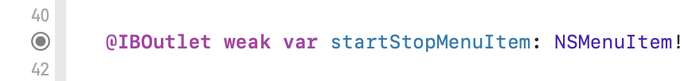
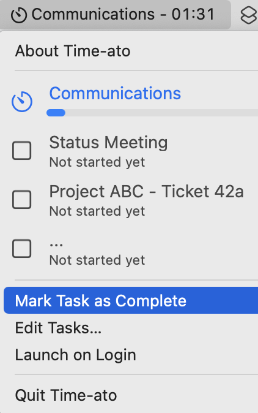
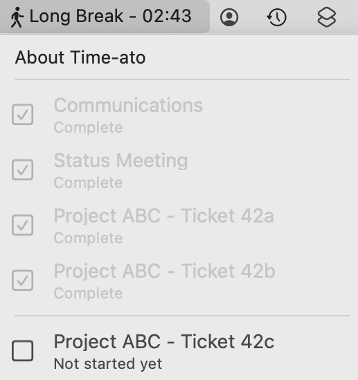
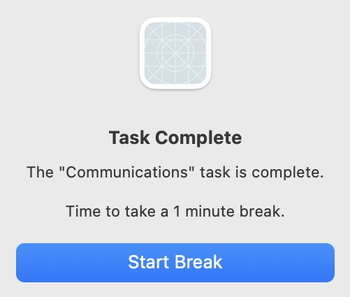
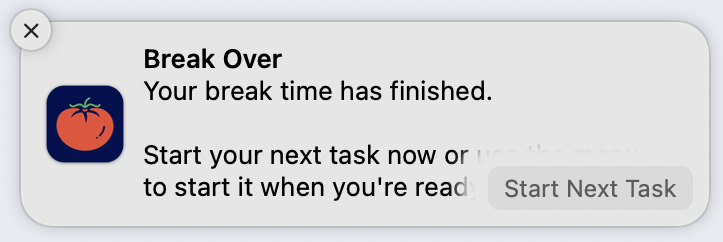

8 Working with Timers, Alerts & Notifications¶
In the previous chapter, you set up a menu bar app using AppKit. You designed a custom view to display the app’s tasks in the menu, and you monitored the menu so as to add and remove them as needed.
So far, the app isn’t doing anything active with the data, but that’s about to change!
Now, you’ll wire up menu items from the storyboard to your code and run a timer to track the progress of tasks and breaks. Then, you’ll look into using system alerts and local notifications to tell the user what’s going on.
Linking Outlets and Actions¶
You’ve created some static menu items to allow control of the app, but they don’t do anything yet. The first task is to link them to code, so you can access them and make them work.
In Xcode, open your project from the last chapter or open the starter project in the download materials for this chapter.
Open Main.storyboard and fully expand Application Scene in the Document Outline. Option-click AppDelegate.swift in the Project navigator to open it in a second editor.
Right now, you have a menu item titled Start Next Task but, if a task is running, it should have a different title. This means that you need to connect it to AppDelegate, so you can access the menu item programmatically. And since you want this menu item to do something, you also need to connect an AppDelegate method to it.
When you Control-drag from a storyboard into a .swift file, Xcode offers to create an Outlet or an Action. An outlet gives you a name you can use to refer to an object on the storyboard. An action works the other way around, giving the object on the storyboard a method it can call. Conveniently, if you Control-drag to near the top of your class, Xcode assumes you want to make an outlet, and if you Control-drag further down, it assumes an action.
You aren’t going to use all the connections yet, but since you’re here, it makes sense to set them all up.
Connecting the Outlets¶
Control-drag from Start Next Task to underneath where you declared menuManager. Don’t let go until you see the Insert Action or Outlet tooltip. You may have to move the mouse pointer down a line to get there:

When the dialog pops up, make sure Connection is set to Outlet and Type is NSMenuItem. Set Name to startStopMenuItem and click Connect:

Add a blank line after the newly added one if needed to make the code look neater. It now looks like this:

Mouse over the black blob in the line numbers gutter. It highlights the Start Next Taskitem in the storyboard to confirm the connection.

Use the same technique to connect the Launch on Login menu item to an outlet called launchOnLoginMenuItem.
These are the only outlets you need, and now you’ll create actions. Add some blank lines at the end of the file but still inside AppDelegate. This gives you somewhere to drag into.
Wiring Up the Actions¶
Control-drag from Start Next Task into this blank space and connect an action called startStopTask:

In the same way, make these other actions:
- Edit Tasks… —
showEditTasksWindow - Launch on Login —
toggleLaunchOnLogin
The end of AppDelegate now looks like this:

Now, when the app is running, selecting one of these static menu items calls its connected method. The methods don’t do anything yet, but you’ve made the links.
You’ve finished connecting everything now, so close the secondary editor and move on to making them work.
Managing the Tasks¶
The standard Apple app architecture is MVC, which stands for Model View Controller. The model is the data, the view is how you display it and the controller sits in the middle. Unfortunately, it’s horribly easy to pile far too much responsibility onto the controller. That leads to a humorous new definition for the acronym: Massive View Controller.
In this app, you don’t have a view controller at all, but this means that a lot has to go through the app delegate. But just like with MVC, you want to avoid Massive App Delegate. Nobody wants to make their app MAD. :]
In the previous chapter, you made a MenuManager class to separate the menu delegate and other menu handling code. You used the sample data set, Task.sampleTasksWithStatus, where some tasks are already completed and one is in progress. This was useful when you were designing the custom view. Now that you’re going to control the tasks, you’ll use Task.sampleTasks, where none of the tasks has started or completed.
First, to manage the tasks with their timings, make another manager class. Add a new Swift file to the project, naming it TaskManager.swift.
Add this code to your new file:
class TaskManager {
var tasks: [Task] = Task.sampleTasks
}
This sets up the class and gives it a property to hold the tasks, setting it to the “no status” sample data set.
Next, to use your new class, open MenuManager.swift and replace var tasks = Task.sampleTasksWithStatus with:
let taskManager = TaskManager()
Now, scroll down to showTasksInMenu() to see that this change has broken something. Your MenuManager can’t find its tasks any more.
Replace the for task in tasks { line with:
for task in taskManager.tasks {
So now menuManager has access to the tasks again, but through another class. And you have a new manager class that can handle the tasks and their timer, without cluttering up the app delegate or the menu manager.
Timers¶
It’s finally time to talk about timers. After all, what’s the point of a timer app that can’t time anything? :]
There are two possibilities for using the Timer class:
- Create a
scheduledTimerthat can perform an action on a repeating schedule. - Use Combine to publish a timer that emits a sequence of
Dateobjects.
Either of these will work, but for this app, you’ll use Combine because it’s a newer and more interesting technology.
Open TaskManager.swift and add an import statement:
import Combine
This gives you access to the Combine framework.
Next, add this property to TaskManager:
var timerCancellable: AnyCancellable?
You’ll create a subscription to a Timer.TimerPublisher and assign it to timerCancellable. It’s good practice to cancel a subscription when its work is done, to free up resources. An AnyCancellable object automatically calls cancel() when its deinitialized. Mission accomplished! Plus, you must keep a reference to the publisher or it won’t hang around to give you events!
Finally, add this method that lets you start the timer:
func startTimer() {
// 1
timerCancellable = Timer
.publish(
// 2
every: 1,
// 3
tolerance: 0.5,
// 4
on: .current,
// 5
in: .common)
// 6
.autoconnect()
// 7
.sink { time in
print(time)
}
}
There’s a lot of detail in this method:
- Create a
Timer.TimerPublisher, which is a specialized Combine publisher that emits the current date at intervals. - Set the time interval between events, in seconds.
- Specify the tolerance. This app doesn’t need to be too accurate, so half a second is fine.
- Every
Timerhas to run on aRunLoop, which is an object that processes inputs from windows, mice, keyboards and so on. ThecurrentRunLoop uses the current thread and that’s perfect for this timer. - Now you get to the
RunLoop.Modeand things get a bit different. Usually, you’d selectdefaultmode, but if you do that for this app, the menu won’t be able to update while it’s open. Usingcommonallows the menu to update whether it’s open or closed. - A
Timer.TimerPublisheris aConnectablePublisher. This means it won’t publish events until a subscriber calls itsconnect()method. Theautoconnect()operator automatically connects when the first subscriber subscribes. - To receive data from the publisher, you use
sinkto create a subscription. It receives the published dates, and for now, only prints them to the console. Later, you’ll call aTaskManagermethod instead, which is why you can’t simply initializetimerCancellablewhen you declare it.
Note
The common RunLoop.Mode is a pseudo-mode that registers the timer to the default, modalPanel and eventTracking modes.
The
modalPanelmode only runs when a dialog like a save or load panel is open. TheeventTrackingmode only runs when events are being tracked, for example when the menu is open. Thedefaultmode only runs if neither of these other condItions are in effect. Thecommonmode combines all these to run no matter what. This allows theTimerto keep publishing all the time.
To test your new timer, add this method to TaskManager:
init() {
startTimer()
}
Build and run the app, then check the Xcode console to see a list of dates appearing, one every second:

That was a dense section, but you’ve ended up with an active Combine timer, and now, instead of printing the dates, you can set it to work. And you also know exactly when I wrote this section. :]
Tracking the Timer State¶
When running this app, the timer can be in one of four states:
- Running a task.
- On a short break.
- On a long break.
- Waiting: no task is running, and the user is not on a break.
When you want to track a set of interconnected states like this, an enumeration is a great choice. But Swift enumerations can have super powers: associated values.
Most of these states have some data that you need to link to them: If you’re running a task, which task is it? And for a break, what time did the break start?
Swift allows you to attach an associated value to cases in an enumeration. These values don’t all have to be of the same type and not all cases have to have one.
Open the assets folder in the download materials for this chapter. Find TimerState.swiftand drag it into the Models group in the Project navigator. Make sure to check Copy items if needed and the Time-ato target.
Take a look at the file. It sets up the four possible states but, for runningTask, it uses an associated value to store the task’s index. And each of the two breaks has an associated value to store the start time.
The activeTaskIndex computed property uses the taskIndex associated with runningTask to return an index number if a task is running or nil if not. This demonstrates how to use switch to get the associated value for the active case in an enumeration.
The breakDuration computed property works out the expected duration of a break, depending on the type.
You’ll use these soon when tracking how the user’s tasks and breaks are progressing, so open TaskManager.swift and add this property:
var timerState = TimerState.waiting
This sets timerState to waiting by default.
Starting and Stopping Tasks¶
Still in TaskManager.swift, add these methods for starting and stopping tasks:
// 1
func toggleTask() {
// 2
if let activeTaskIndex = timerState.activeTaskIndex {
stopRunningTask(at: activeTaskIndex)
} else {
startNextTask()
}
}
func startNextTask() {
// 3
let nextTaskIndex = tasks.firstIndex {
$0.status == .notStarted
}
// 4
if let nextTaskIndex = nextTaskIndex {
tasks[nextTaskIndex].start()
timerState = .runningTask(taskIndex: nextTaskIndex)
}
}
func stopRunningTask(at taskIndex: Int) {
// 5
tasks[taskIndex].complete()
timerState = .waiting
}
So what are these methods doing?
- You’ll soon set the
startStopMenuItemaction to call this method. - Use
timerStateto check if a task is running. If so, it’ll stop it, and if not, it’ll start the next one. - To start the next task, find the index for the first one in the list that has a status of
notStarted. - If there is a valid task, start it and set
timerStatetorunningTask, storing the index number. - To stop a running task, use its
complete()method and settimerStateback towaiting.
Now that you’ve got these methods in place, go ahead and call them from the menu.
In AppDelegate.swift, insert this into startStopTask(_:):
menuManager?.taskManager.toggleTask()
Build and run, open the menu and select Start Next Task. Wait a few seconds, then open the menu again to see the first task in progress. Select Start Next Task again to mark the first task as complete.

There’s still quite a list of features to implement: updating the menu, checking the timer for completed tasks, and handling breaks. But you’re really starting to see it all come together.
Updating the Menu Title¶
There are three parts of the menu that you need to update: the menu title, the startStopMenuItem title and the tasks themselves.
Looking at the menu title first, it should change depending on the timer state.
Open the assets folder you downloaded and add TaskManagerExt.swift to your project, using the same settings. This gives you an extension to TaskManager with a computed property and a method.
The computed property checks timerState and returns a tuple containing an appropriate title for the menu and the name of an image to use as the menu icon. It uses all the associated values to do this.
The method uses a DateComponentsFormatter to format the remaining time for the task or break into minutes and seconds. You declare the date formatter as a global property so this method doesn’t have to create a new one every second.
TaskManager uses these to update the menu title, but all the menu-related methods are in AppDelegate.swift. In fact, you’ll soon need another method in AppDelegate, so add its stub now:
func updateMenu(
title: String,
icon: String,
taskIsRunning: Bool
) {
}
Back in TaskManager.swift, you need to use AppKit to access AppDelegate, so add this line to the other imports at the top of the file:
import AppKit
Next, add this method to TaskManager:
func checkTimings() {
// 1
let taskIsRunning = timerState.activeTaskIndex != nil
// more checks here
// 2
if let appDelegate = NSApp.delegate as? AppDelegate {
// 3
let (title, icon) = menuTitleAndIcon
// 4
appDelegate.updateMenu(
title: title,
icon: icon,
taskIsRunning: taskIsRunning)
}
}
And what does this do?
- Check to see if any task is running.
- Get a reference to the app’s delegate.
- Use the property in TaskManagerExt.swift to find the appropriate title and icon for the menu.
- Pass this information to your new method in
AppDelegate.
Now, back to AppDelegate.swift to implement the new method. Replace your stub with this code:
func updateMenu(
title: String,
icon: String,
taskIsRunning: Bool
) {
// 1
statusItem?.button?.title = title
statusItem?.button?.image = NSImage(
systemSymbolName: icon,
accessibilityDescription: title)
// 2
updateMenuItemTitles(taskIsRunning: taskIsRunning)
}
func updateMenuItemTitles(taskIsRunning: Bool) {
// 3
if taskIsRunning {
startStopMenuItem.title = "Mark Task as Complete"
} else {
startStopMenuItem.title = "Start Next Task"
}
}
These two methods:
- Use the supplied title and icon name to configure the status item’s button.
- Call the second method to update the menu item name.
- Change the
startStopMenuItemto show an appropriate title.
There’s only one piece left in this puzzle. Go back to TaskManager.swift and, in startTimer(), replace .sink { … } with:
.sink { _ in
self.checkTimings()
}
Now you can build and run. Open the menu and select Start Next Task. The menu title now shows your task title and counts down the remaining time. And instead of Start Next Task, that menu item is now labelled Mark Task as Complete.

Updating the Tasks¶
You’ve done two of the three updates needed, but the menu item showing the active task is only updating when the menu opens or when you move the mouse pointer over it.
Remember in the previous chapter when you created the custom view for the task menu items? You did it programmatically to make for easier updating. And now, you’ll see the result.
In MenuManager.swift, add this:
func updateMenuItems() {
// 1
for item in statusMenu.items {
// 2
if let view = item.view as? TaskView {
// 3
view.setNeedsDisplay(.infinite)
}
}
}
In these lines, you:
- Loop through every menu item in
statusMenu. - Check if it has a view of type
TaskView. - If so, tell the view it needs to update its entire display. This triggers the view’s
draw(_:)method, which refreshes its display with the current task data. You don’t need to recreate the view and you don’t have to reassign the task. You simply tell the view it needs to refresh, and it does all the work.
Now, to use this method, go back to AppDelegate.swift and add this to the end of updateMenu(title:icon:taskIsRunning:):
if menuManager?.menuIsOpen == true {
menuManager?.updateMenuItems()
}
The menu items only need updating if the menu is open. If it is, this calls the MenuManager method you just added.
Build and run again. Start the next task, then open the menu and leave it open. Now you can see the progress bar advance as the timer counts down.

The visuals are all looking great now. Your menu is showing the title and remaining time for the running task, and the task menu items are also updating live.
Next, it’s time to work out what to do when a task finishes.
Checking the Timer¶
This is another job for TaskManager, so open TaskManager.swift and add these methods:
// 1
func checkForTaskFinish(activeTaskIndex: Int) {
let activeTask = tasks[activeTaskIndex]
if activeTask.progressPercent >= 100 {
// tell user task has finished
stopRunningTask(at: activeTaskIndex)
}
}
// 2
func checkForBreakFinish(startTime: Date, duration: TimeInterval) {
let elapsedTime = -startTime.timeIntervalSinceNow
if elapsedTime >= duration {
timerState = .waiting
// tell user break has finished
}
}
// 3
func startBreak(after index: Int) {
let oneSecondFromNow = Date(timeIntervalSinceNow: 1)
if (index + 1).isMultiple(of: 4) {
timerState = .takingLongBreak(startTime: oneSecondFromNow)
} else {
timerState = .takingShortBreak(startTime: oneSecondFromNow)
}
}
What’s happening here?
- Get the active task, see if it’s run out of time and, if so, stop it.
- If the user is on a break, check if the break is over and reset
timerState.timeIntervalSinceNowreturns the seconds between now and anotherDate. If the otherDateis in the past, this is negative, which is why you setelapsedTimeto the negative of that. - To start a new break, check if it should be long or short, set
timerStateand associate the starting time, which you set one second into the future. This makes the timer start showing it’s full duration.
To use these new abilities, you need to change a couple of existing methods.
Add this to the end of stopRunningTask(at:):
if taskIndex < tasks.count - 1 {
startBreak(after: taskIndex)
}
Unless you’ve just stopped the final task, this will start a break.
Next, in checkTimings(), replace // more checks here with:
switch timerState {
case .runningTask(let taskIndex):
// 1
checkForTaskFinish(activeTaskIndex: taskIndex)
case
.takingShortBreak(let startTime),
.takingLongBreak(let startTime):
// 2
if let breakDuration = timerState.breakDuration {
checkForBreakFinish(
startTime: startTime,
duration: breakDuration)
}
default:
// 3
break
}
What are you doing?
- If there is a task running, check if it has run for its full duration.
- When the user is on any form of break, get the duration of that break from
timerStateand use that, with the associated start time, to see if the break is over. - Switches must be exhaustive, but you don’t want to do anything if
timerStateiswaiting, so usebreakto satisfy the compiler.
And with those changes, you’re ready to build and run again. Start the next task and wait while it counts down. TaskTimes uses short durations when debugging, so you only have to wait for two minutes.
Note
If you feel two minutes is still too long to wait, adjust the debug mode taskTime in TaskTimes.swift. While you’re there, you can shorten the break times too.
When the task time is up, the task menu item shows as complete, and the menu title switches to a short break, suggesting that you get yourself a very quick cup of coffee:

You have to start your next task manually, which you can do either during or after a break, but you can end it faster by selecting Mark Task as Complete. Step through the tasks until you’ve finished the fourth one. Now the app suggests that you go for a walk during your long break.

The last part of the timing for this app is telling the user what’s happening and offering to start the next task after each break.
Creating Alerts¶
You’ll use NSAlert to communicate with your users. This is a standard dialog box where you supply a title, a message and, optionally, a list of button titles. In UIKit programming, you’d use UIAlertController for this.
Go to the assets folder in the downloaded materials and drag Alerter.swift into your project, using the usual settings. Open the file and take a look at its methods:
taskComplete(title:index:)shows an alert when a task timer runs out. It works out which break type is next and shows that in the message.allTasksComplete()is similar to the first method, but it shows the alert after the user completes the last task.breakOver()is an incomplete method to show an alert giving the option to start the next task immediately.openAlert(title:message:buttonTitles:)is the method called by all the others that actually shows the alert. This one is also incomplete.
Start by filling in the blanks in the last method, openAlert(title:message:buttonTitles:). Replace its single line return .alertFirstButtonReturn with:
// 1
let alert = NSAlert()
// 2
alert.messageText = title
alert.informativeText = message
// 3
for buttonTitle in buttonTitles {
alert.addButton(withTitle: buttonTitle)
}
// 4
NSApp.activate(ignoringOtherApps: true)
// 5
let response = alert.runModal()
return response
How does this show an alert?
- Create a standard
NSAlert. - Set the main
messageTextto the suppliedtitleand use themessageparameter to set the less prominentinformativeText. - Add a button for each string in
buttonTitles, if there are any. If not, like withallTasksComplete(), the alert shows a single OK button. - Make sure the app is active. Remember how your open app windows hid the About box when you tried it? This brings the app to the front, so the alert is not hidden like the About box was.
- Display the alert and return a result indicating which button the user clicked.
The return type is NSApplication.ModalResponse. This is alertFirstButtonReturnfor the first button added, alertSecondButtonReturn for the next and alertThirdButtonReturn for the third.
Note
An alert with more than three buttons may not be great UI, but what if your app needs it? Instead of using the convenient alert...ButtonReturn, you can check the rawValue of the NSApplication.ModalResponse. This is 1000 for the first button, 1001 for the second button and so on.
The two methods used when a task is complete are informative only, and don’t care about the result. So openAlert(title:message:buttonTitles:) is marked with @discardableResult so callers are not obliged to access the return value.
The breakOver() method does want to get a result. To complete it, replace return .alertSecondButtonReturn with:
// 1
let buttonTitles = ["Start Next Task", "OK"]
// 2
let response = openAlert(
title: "Break Over",
message: message,
buttonTitles: buttonTitles)
// 3
return response
Here’s what you’re doing:
- Set up the titles for the buttons. The first one is the default button and clicking it or pressing Return sends back
alertFirstButtonReturn. - Use the same method to display the alert, but this time, read the return value indicating which button the user clicked.
- Return that value to the caller.
Showing Alerts¶
The alert code is all there now, but you still need to set up an instance of Alerter and add the calls to use it.
To start, open TaskManager.swift and add this property:
let interaction = Alerter()
Next, find checkForTaskFinish(activeTaskIndex:) and replace // tell user task has finished with:
// 1
if activeTaskIndex == tasks.count - 1 {
// 2
interaction.allTasksComplete()
} else {
// 3
interaction.taskComplete(
title: activeTask.title,
index: activeTaskIndex)
}
What does this do?
- Check to see if the task that just ended was the last task in the list.
- If it was, call
allTasksComplete(). - If there are more tasks still to do, call
taskComplete(title:index:), passing in the task’s title and its index. This allows the alert to show the information about the task and the type of break to follow.
That deals with the end of a task, so next you can handle the end of a break.
Scroll down to checkForBreakFinish(startTime:duration:). In this method, replace // tell user break has finished with:
let response = interaction.breakOver()
if response == .alertFirstButtonReturn {
startNextTask()
}
This displays the breakOver() alert, checks which button the user clicked and starts the next task, if requested.
With that all done, build and run and start the first task. Wait for it to time out, and you’ll see this:

Your information is all there, but it’s going to look a lot better with an app icon. Open Assets.xcassets in the Project navigator and delete AppIcon. Look in the downloaded assets folder again and find AppIcon.appiconset. Drag it into your assets list to install the icon. Press Command-Shift-K to clean the build folder. This makes sure that Xcode applies the new icon.
Note
If Xcode is hiding file extensions, you’ll see Assets in the Project navigator. If you have file extensions hidden in Finder, look for AppIcon in the assets folder.
Build and run again, start the first task, then use Mark Task as Complete to jump straight into the break.
And after the break finishes, you’ll get this better looking alert:

Click the default button to start the next task immediately. And now, your app is fully interactive and informative.
Using Local Notifications¶
You may be wondering if local notifications would be a better choice for communicating with the user.
To test this, add Notifier.swift from the assets folder. This has the same three methods as Alerter, but breakOver() is different because a notification does not wait for a response. There are also some notification-specific methods for checking permissions, setting up the actions that provide clickable buttons, watching for responses and making sure the notification can appear even if the menu is open.
Notifications look different in macOS, but the code is exactly the same as you’d use for iOS.
To switch to using notifications, you’ll have to make some changes in TaskManager.swift:
First, comment out let interaction = Alerter() and add this to change your interaction to the new class:
let interaction = Notifier()
The two completed task calls work without any changes, but you’ll have to replace checkForBreakFinish(startTime:duration:) with the following method. It includes the code for both options, so you can easily swap:
func checkForBreakFinish(startTime: Date, duration: TimeInterval) {
let elapsedTime = -startTime.timeIntervalSinceNow
if elapsedTime >= duration {
timerState = .waiting
// Uncomment if using Alerter
// let response = interaction.breakOver()
// if response == .alertFirstButtonReturn {
// startNextTask()
// }
// Uncomment if using Notifier
interaction.startNextTaskFunc = startNextTask
interaction.breakOver()
}
}
Instead of waiting for the user to click a button, you pass Notifier a function to call if it needs to start the next task. Then you call breakOver() without expecting a result.
Build and run, start the next task and wait until it completes. The app now tries to show a notification. This is the first time you’re running the app with notifications enabled, so now you’ll see this notification asking for permission:

Mouse over this notification to see the Options menu and select Allow.
So where’s the notification your task completed? Click the clock in the top right of your menu bar to slide out your recent notifications. And here it is:

It was hidden away in the notifications panel by the permissions request notification.
Now wait for the break to finish and you’ll see this:

Again, you have to mouse over the notification to see the Start Next Task option. If you click that button, the next task starts. If you click anywhere else in the notification, it’ll disappear without starting your task.
Note
If you don’t Allow notifications before the short break ends, you might not see the Break complete notification. To try again, remove Time-ato from the list of allowed apps: Open System Preferences ▸ Notifications & Focus, select Time-ato in the list of apps and press Delete.
Picking a User interaction¶
Which do you think is better: alerts or notifications?
They both work, they both tell the user what’s happening and they both allow the user to start the next task after a break.
The main difference is that alerts are immediate and intrusive. They stay front and center of your screen until you acknowledge them. Notifications happen much more in the background. If you don’t respond to them within a few seconds, they quietly disappear into the notification panel. If you didn’t notice a notification first appear, you may not notice it for days.
While there are use cases for both, this app works much better with alerts. They force you to pay attention, so you’re much more likely to take a break when you should.
So change the comments around inside checkForBreakFinish(startTime:duration:), and switch interaction back to Alerter() to get back to where you were.
Key Points¶
- With AppKit apps, like UIKit apps, you have to make connections between the storyboard and the code.
- There are two main ways to create a timer. This app uses a Combine
TimerPublisher. - Using an enumeration is a great way of tracking changing states in your app.
- Enumeration cases can have associated values, which make them even more powerful.
- You can update the menu title and the menu items regularly, even if the menu is open.
- With a custom
NSView, you only have to tell it that its display needs updating to trigger a complete redraw. - System alerts provide a standard way of communicating with the user.
- Local notifications are a way of contacting the user less intrusively.
Where to Go From Here?¶
At the start of this chapter, your app was displaying the task data in your status bar menu, but nothing else was happening.
Now the app has a full timing system, with alerts or notifications to communicate with the user.
The missing feature is editing the tasks and saving them. In the next chapter, you’ll learn how to use a SwiftUI view in an AppKit app. You’ll edit the tasks, and you’ll find out much more about the Mac app sandbox.
To learn more about Combine, have a look at Combine: Getting Started, which includes a section on timers. Combine works the same on any Apple platform. To dive deeper into Combine, check out our book Combine: Asynchronous Programming with Swift.
If you’d like more information about local notifications, check out Local Notifications: Getting Started. It uses iOS, but the exact same code works in a macOS app.